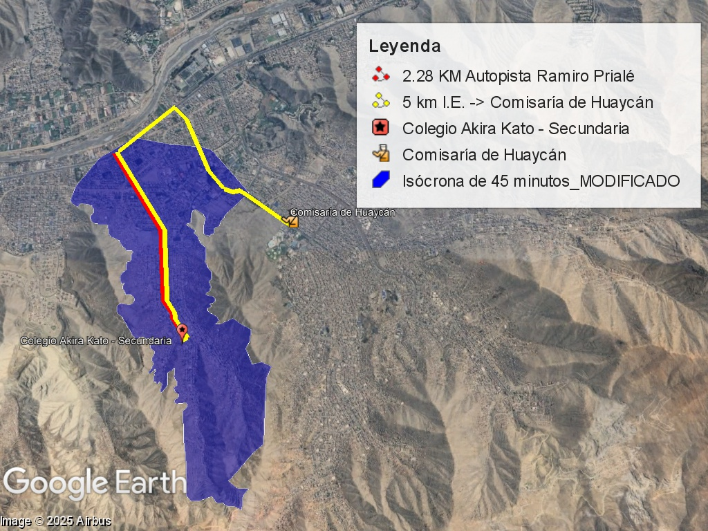
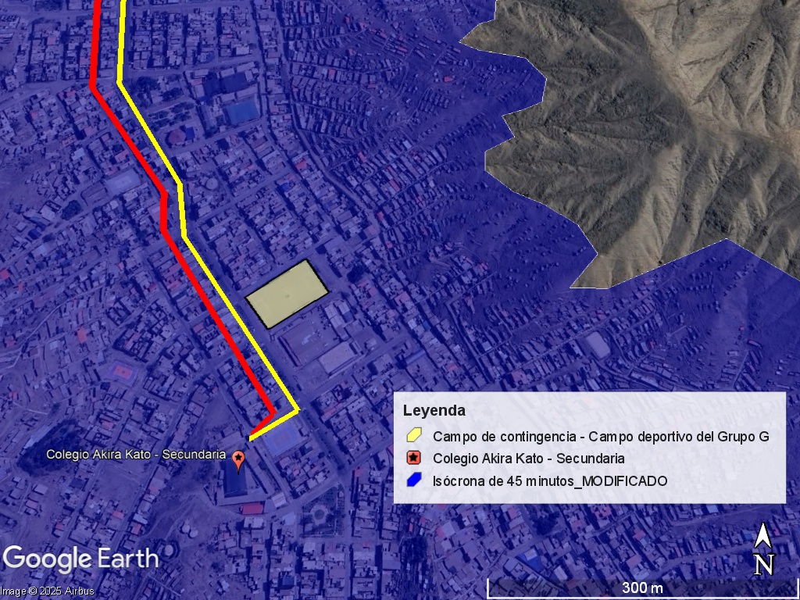

1. FACTORES CONDICIONANTES - LOCALIZACIÓN
| 1. UBICACIÓN DE LA POBLACIÓN OBJETIVO | Departamento: Lima |
| Provincia: Lima | |
| Distrito: Ate | |
| Centro Poblado: Horacio Gomez | |
| Área de influencia: radio de 45min a la Unidad Productora | |
| 2. VÍAS DE ACCESO | El colegio es accesible desde la Carretera Central y la Av. Nicolás Ayllón, con un tiempo de viaje de 32 minutos desde la plaza de Ate. El acceso se da por la Av. Horacio Zevallos, facilitando el tránsito peatonal y vehicular. |
| 3. TIPO DE UNIDAD PRODUCTORA | Unidad Productora No Lineal. En el período de ejecución se utilizará un campo de contingencia, ubicado a 100 metros para el funcionamiento del centro educativo |
| 4. FACILIDAD PARA LA PRODUCCIÓN DE INSUMOS | La autopista Ramiro Prialé facilita el acceso a los insumos necesarios para la producción. |
| 5. ANÁLISIS DE CONTEXTO | El colegio cumple con la compatibilidad de uso según la Guía de Diseño de Espacios Educativos, no presentando proximidad a elementos como cementerios, plantas de tratamiento, hospitales o infraestructuras de riesgo. |
| 6. CARACTERÍSTICAS DEL TERRENO | El terreno tiene una superficie de 6,503.95 m² con una pendiente variable entre 1% y 10%. Se encuentra en una zona rocosa con desniveles y muros de contención. Dentro de la norma de diseño, se han considerado las características geotécnicas del suelo. |
| 7. ASOLEAMIENTO | El clima de la región es templado y árido. Las ventanas orientadas al Este y Oeste pueden verse afectadas por el deslumbramiento en días soleados. |
| 8. FACTOR LLUVIA | La precipitación anual en la zona varía entre 5 mm y 10 mm, que son valores bajos según datos históricos del SENAMHI. |
| 9. VIENTOS | La dirección predominante del viento es Sur-Este, con una velocidad máxima anual de 32 m/s. |
| 10. TEMPERATURA MÍNIMA Y MÁXIMA | La temperatura promedio anual oscila entre 12 ℃ y 26 ℃, con la máxima registrada en febrero y la mínima en julio. |
| 11. ARQUITECTURA DE LAS EDIFICACIONES EXISTENTES | El colegio cuenta con 10 bloques distribuidos en cuatro plataformas, con una organización funcional en torno a la losa deportiva y patios. |
2. FACTORES CONDICIONANTES - TECNOLOGÍA
| Especificaciones técnicas | Según las normas R.V.M. N° 164-2020-MINEDU; R.V.M. N° 010-2022-MINEDU y R.V.M. N° 208-2019-MINEDU el mobiliario y equipamiento tecnológico está preestablecido según el nivel educativo. La formulación deberá considerar estos lineamientos. |
| Condiciones del proveedor | Al ser bienes comunes existen múltiples proveedores disponibles en el mercado. |
| Obsolescencia tecnológica | Se considera la obsolescencia tecnológica de mobiliario en 5 año y equipamiento tecnológico en 3 años. Dentro de Presupuesto del Proyecto se contemplará la renovación de estos elementos. |
| Condiciones climáticas y físicas | Las condiciones climáticas de la zona podría afectar al funcionamiento del equipamiento tecnológica, el diseño arquitectónico deberá preveer esta situación. |
| Disponibilidad de recursos | La Municipalidad Distrital de Ate tiene compromiso de ejecutar este proyecto de Inversión dentro de su periodo ejecutivo. |
2.Localización de la UPy el campo de contingencia

